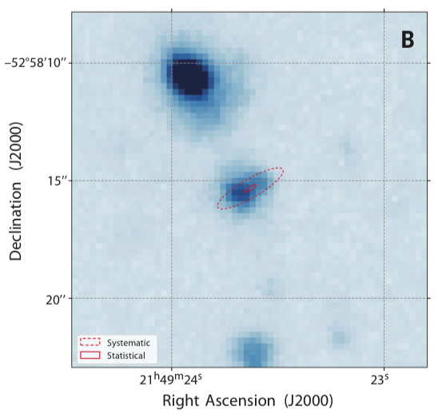

FRB 181112
Image from Prochaska et al., 2019, Science, 366, 231
Summary
- Detected by: ASKAP-ICS
- FRB coordinates (RA, Dec): 21:49:23.63 −52:58:15.3 (J2000)
- Host coordinates (RA, Dec): 21:49:23.68 -52:85:15.4 (J2000)
- Redshift: 0.4755
- Observed DM: 589.27 pc cm-3
- Repeating: No
- References: Prochaska et al., 2019, Science, 366, 231;
Bhandari et al., 2020, ApJ, 895, 37
Host galaxy properties
| Quantity | Measured value | Unit |
|---|---|---|
| Stellar mass | (3.98 ± 2.02) × 109 | M⊙ |
| Star-formation rate | 0.37 ± 0.11 | M⊙/yr |
| Metallicity | 8.86+0.25-0.65 | 12+log(O/H) |
| E(B-V) | 0.18 ± 0.10 | mag |
| Mass-weighted age | 572.4 | Myr |
| Absolute r-band mag. | -20.40 ± 0.07 | mag |
| u - r color (rest-frame) | 1.12 ± 0.15 | mag |
| Half-light radius | 7.19 ± 1.70 | kpc |
| FRB offset from galaxy center | 1.69 ± 2.61 | kpc |
Emission line fluxes
| Emission line | Measured value |
|---|---|
| Hα | 0.64 ± 0.30 |
| Hβ | 0.29 ± 0.02 |
| [OIII] λ 5007 | 0.54 ± 0.03 |
| [NII] λ 6584 | 0.49 ± 0.30 |
Photometry
| Telescope | Filter (eff. wavelength) | Magnitude (AB) |
|---|---|---|
| DES | g (527 nm) | 22.64 ± 0.09 |
| DES | r (659 nm) | 21.68 ± 0.05 |
| DES | i (789 nm) | 21.46 ± 0.06 |
| DES | z (976 nm) | 21.42 ± 0.11 |
| DES | Y (1003 nm) | 21.05 ± 0.17 |
| VLT/FORS2 | g (470 nm) | 22.50 ± 0.04 |
| VLT/FORS2 | I (768 nm) | 21.48 ± 0.04 |